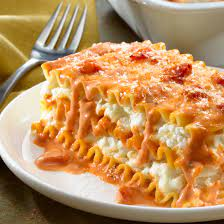

Lasagna

Who this lasagna is for:
This lasagna is not for the faint of heart. This lasagna is strictly
for 3 types of people only.
- Those who are ready to get married (because if you cook this on a
first date then you might as well pick the venu too).
- Those who plan on spending the next 4 hours asleep in a recliner
with the TV on (you WILL fall into a food coma).
- Anyone looking to have the best tasting cardiac arrest of their
lives. Trust us this will get you there!
Lets Begin!
What you'll need
- 1 jar parmesan cheese sauce
- 1 jar of favorite marinara and wine sauce
- 30oz ricotta cheese
- 2 cups mozzarella cheese shredded
- 1/2 cup parmesan cheese grated
- 2 eggs
- 12 lasanga noodles cooked and drained
Cooking Instructions
- Preheat oven to 375. Combine ricotta cheese, mozzarella cheese, 1/4 cup
parmesan cheese and eggs in a large bowl; set aside.
- Combine sauces in medium bowl.
- Spread 1 cup of sauce mixture in 13 x 9in. baking dish.
Layer 4 lasagna noodles, then 1 cup sauce mixture and 1/2
of the ricotta mixture; repeat. Top remaining 4 noodles, then
sauce mixture and remaining 1/4 cup parmesan cheese.
- Cover with aluminum foil and bake 50 minutes. Remove foil
and bake an additional 10 minutes or until bubbling. Let stand
10 minutes before serving.